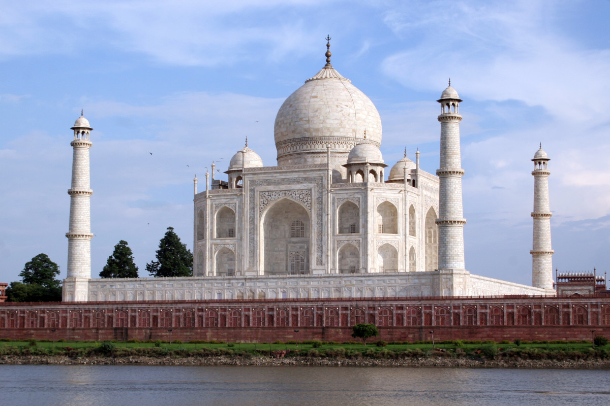

-
Masala Dosa Masala dosa is stuffed dosa. The two parts are the dosa and the stuffing. The dosa is made in the usual way by soaking rice and lentils overnight in water and then grinding it to a batter. The stuffing is made from boiled potatoes with a seasoning of mustard seeds and garnishing of grated coconut, coriander, and lemon juice.
Mysore masala dosa has a red chutney made from red chillies, onion, and garlic applied to the inside of the dosa before placing the potato stuffing on top of it.Rava masala dosa is also variation of the dosa.[8] It is made from semolina and using fillings of cheese and paneer. Masala Dosa is made using a variation vegetables or sprouts to replace potato. -
Briyani The word "Biryani" is used more in the Indian subcontinent. On the other hand in South East Asian countries like Singapore and Malaysia, "Briyani" is more often used
Biryani , also known as biriyani, biriani, birani or briyani, is a mixed rice dish that originates from the Muslims of the Indian subcontinent.This dish is especially popular throughout the Indian subcontinent, as well as among the diaspora from the region. It is also prepared in other regions such as Iraqi Kurdistan.It is made with Indian spices, rice, meat (chicken, goat, beef, prawn, or fish), vegetables or eggs.
-
Ada pradhamam
-
 Gulab Jamun
Gulab Jamun
-
Malpua
-
Rasamalai
-
Rajma Chawal Rājmā or Rāzmā is a popular vegetarian dish, originating from the Indian subcontinent, consisting of red kidney beans in a thick gravy with many Indian whole spices and, is usually served with rice. Although kidney beans did not originate from the Indian subcontinent, it is a part of regular diet in Northern India and Nepal.The dish developed after the red kidney bean was brought to the Indian subcontinent from Mexico.Rajma chawal is kidney beans served with boiled rice.
Rajma Masala combined with rice is referred to as Rajma Chawal and is a very popular North Indian dish. Punjabi's enjoy greeting their guests with Rajma Chawal topped with pure butter.You may garnish the dish with coriander leaves if you like it. An accompaniment of Chaas or buttermilk makes meal complete and sumptuous. -
Chicken Tandoori Tandoori chicken is chicken dish prepared by roasting chicken marinated in yoghurt and spices in a tandoor, a cylindrical clay oven. The dish originated from the Indian subcontinent and is popular in many other parts of the world.
There is a range of tandoori recipes for whole grilled chicken, some of which are cooked in a tandoor and others over charcoal. These include Chirga (Roasted whole chicken); Tandoori Murgh (Roast whole chicken with almonds); Murgh Kabab Seekhi (Whole stuffed chicken on the spit); Kookarh Tandoori (Steamed chicken on spit); Tandoori Murgh Massaledarh (Whole spiced chicken on spit); and Murghi Bhogar (Chicken in the Bhogar style)
-
Chakli
-
Aloo Chaat
-
Samosa
-
Pani Puri
-
Taj Mahal The Taj Mahal is an ivory-white marble mausoleum on the south bank of the Yamuna river in the Indian city of Agra. It was commissioned in 1632 by the Mughal emperor, Shah Jahan (reigned from 1628 to 1658), to house the tomb of his favourite wife, Mumtaz Mahal. It also houses the tomb of Shah Jahan, the builder. The tomb is the centerpiece of a 17-hectare (42-acre) complex, which includes a mosque and a guest house, and is set in formal gardens bounded on three sides by a crenellated wall
-
Amristar Golden Temple The Golden Temple, also known as Darbar Sahib is a Gurdwara located in the city of Amritsar, Punjab, India. It is the holiest Gurdwara and the most important pilgrimage site of Sikhism.The temple is built around a man-made pool (sarovar) that was completed by Guru Ram Das in 1577.[5][6] Guru Arjan, the fifth Guru of Sikhism, requested Sai Mian Mir, a Muslim Pir of Lahore, to lay its foundation stone in 1589. The Harmandir Sahib is an open boat of worship for all men and women, from all walks of life and faith.[2] It has a square plan with four entrances, has a circumambulation path around the pool. The temple is a collection of buildings around the sanctum and the pool.
-
 Taj Mahal
-
Golden Temple
-
Andaman Islands
-
Kumarakom
-
Andaman The Andaman Islands form an archipelago in the Bay of Bengal between India, to the west, and Myanmar, to the north and east. Most are part of the Andaman and Nicobar Islands Union Territory of India, while a small number in the north of the archipelago, including the Coco Islands, belong to Myanmar.The Andaman Islands are home to the Andamanese, a group of indigenous people that includes a number of tribes including the Jarawa and Sentinelese tribes.While some of the islands can be visited with permits, others including the North Sentinel island are banned for entry by law. The Sentinelese are generally hostile to visitors and have had little contact with any other people. The government protects their right to privacy.
-
Kumarakom Kumarakom is a village on Vembanad Lake in the backwaters of Kerala, southern India. It’s laced with canals, where houseboats ply the waters. Kumarakom Bird Sanctuary is home to many species including cuckoos and Siberian storks. Nearby, the Bay Island Driftwood Museum displays wooden sculptures. In the lake, Pathiramanal Island is a haven for rare migratory birds. Ancient Thazhathangady Mosque is east of Kumarakom.Kumarakom is home to a wide variety of flora and fauna. Kumarakom Bird Sanctuary is a noted bird sanctuary where many species of migratory birds visit. The Vembanad Lake, the largest backwater in Kerala, is habitat for many marine and freshwater fish species and it teems with Karimeen (Pearl spot also known as Etroplus suratensis) shrimp (Metapenaeus dobsonii) common name Poovalan chemeen. The bird sanctuary extends over 14 acres (57,000 m²), and came into existence following preservation efforts from the government. It is a major tourist attraction.
-
Living Root bridge
-
Varanasi
-
Mirjan Fort - Gokarna
-
Mahabalipuram